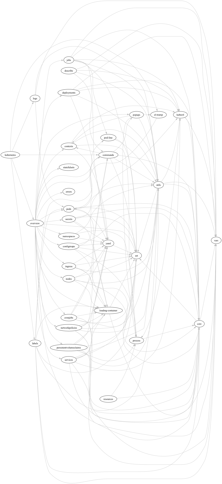

Contributing
Hello there, intrepid contributor! Please see the home page for basic information about this project.
If you would like to submit a bug report or contribute code or documentation, read over the guidelines below for the expectations. Then follow the development setup steps to get started.
Contribution Guidelines
The first thing you should do is browse the GitHub issues for discussion relating to the bug or feature you’re interested in. Do your best here!
Bug reports
Make sure you’re using the latest release of the package.
If no ticket exists yet, you can write a new issue. Provide reproduction steps if you can, as well as your Emacs version and basic OS info.
If the issue relates to integration with kubectl, make sure to supply
your kubectl version.
Code changes
For code changes, please follow the following guidelines.
- Take the time to write good commit messages; here are some practical tips.
- Try to keep PRs to a manageable size. PRs that change no more than 300-400 lines at a time get faster and better reviews.
- If your contribution adds new functionality, please add corresponding unit tests.
- Please document all new functions and methods. If you’re feeling particularly industrious, please also add documentation to any existing functions that you modify along the way.
- If your contribution is a user-facing change, please add an entry to
CHANGELOG.orgin theUnreleasedsection detailing it. See keepachangelog.com for an overview of this process. - Add yourself to the contributors list by commenting something like the following in your PR:
@all-contributors please add @<username> for <code/documentation/etc.>. See @all-contributors bot documentation for more details. See.all-contributorsrcfor examples of contribution “types.”
Development setup
Dependencies
See Brewfile for the project’s non-Elisp dependencies. If you’re developing on a Mac machine, you can install like so
from the project root:
$ brew bundle
If you’re developing on a Linux machine, install these dependencies manually.
You do not need kubectl installed in order to run tests, but you do need it to run the package inside Emacs.
If you want to contribute code changes, you should fork the repository. Otherwise clone the main repo.
git clone "git@github.com:<username>/kubernetes-el.git"
git clone "git@github.com:kubernetes-el/kubernetes-el.git"
Running make will tell you if you need to install anything to hack on the project:
cd kubernetes-el
make
As a final check, run tests to make sure everything works. All tests should pass.
make test
Implementation Notes
Below are some general notes to help make sense of this beast. The main points to understand are:
- This package implements a state manager
- A timer is used to fetch information from Kubernetes and update the state
- Another timer is used to compile the state into a representation of the overview buffer, which is then interpreted.
The separation of state from rendering improves testability, and makes it easier to develop view components that can be reused throughout the package.
State Management
This package implements its own state manager, which provides structured mechanisms for accessing the application state. The state can be read using the [kubernetes-state](kubernetes-state.el::(defun%20kubernetes-state%20()) routine, and the package implements a suite of accessor functions for reading and modifying specific parts of the state.
The core of the state manager is the function kubernetes-state-next, which is
a pure function taking the current state, an action to perform, and any
arguments required for that action. Its return value is the next application
state.
In order to actually make changes to the state, the kubernetes-state-update
routine is used to evaluate an action and arguments and store the updated
state. Other update routines are built around it, providing a more structured
interface to the state manager.
State Updates
A timer is used to trigger polling processes which query Kubernetes for its state and resources. This timer starts when the overview buffer is opened, and repeats until that buffer is killed.
The polling timer runs a hook, kubernetes-poll-hook, which in turn
runs the polling routines that update the application state.
The routine kubernetes-state-trigger-redraw is the main routine used to
trigger a redraw. It runs a hook, kubernetes-redraw-hook, which is used to
signal that a redraw should occur. This routine is sometimes triggered manually,
but is most often triggered by the redraw timer. See kubernetes-timers.el.
Aside from the polling processes, certain interactive commands, popup buffers and other UI elements can update parts of the state.
Rendering is mostly decoupled from state management, so redrawing occurs asynchronously from state updates caused by polling. However, as a special case a redraw is triggered the first time each state variable is set. This ensures the UI displays values as soon as possible when the porcelain is started.
Rendering
This package implements a DSL (domain-specific language) used to specify how objects should be rendered in the UI.
Rendering the overview buffer is divided into two stages:
- Take the current state and compile an AST of the desired changes
- Erase the buffer and interpret the AST to execute the changes (here).
Future optimizations could include dirty checking to only update certain parts of the buffer.
kubernetes-ast.el contains the implementation of the interpreter for the
AST. It implements the core forms and provides a macro,
kubernetes-ast-define-component, that allows the interpreter to be extended
with custom components implemented in terms of the AST.
Feature dependencies
The chart below shows the dependencies between features, excluding
kubernetes-state, kubernets-props and kubernetes-modes which are
direct dependencies of many modules.
